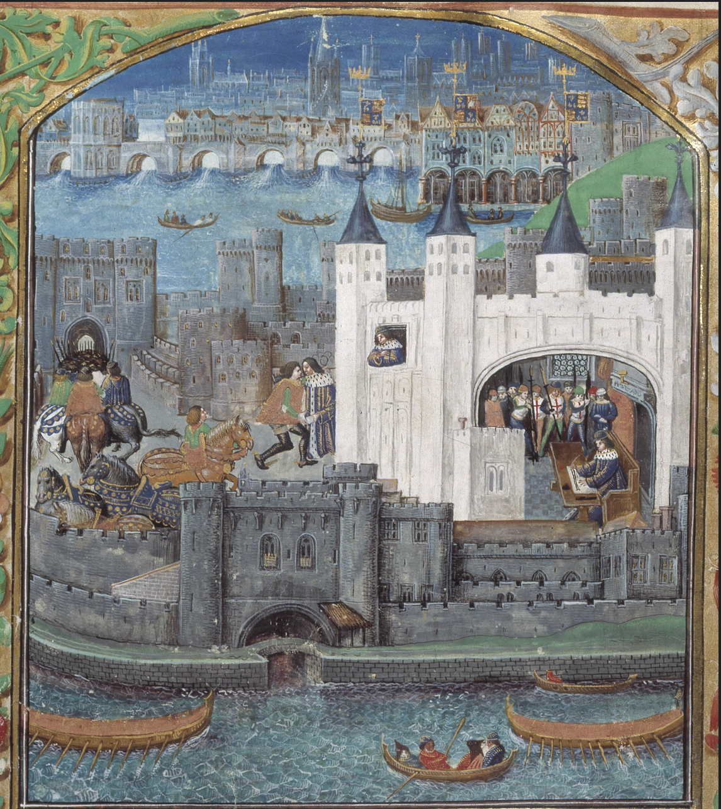
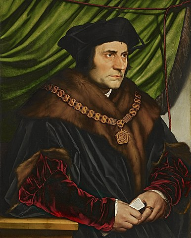

Introduction
First built in the eleventh century following the Norman Conquest of England, the Tower of London has a long, fascinating and somewhat dark history. It has served as a castle and temporary residence for monarchs, a weapons storehouse, a prison for political prisoners, an execution site for queens and spies, and a secure site for the crown jewels. This article examines and explores key functions of the Tower.

Figure 1: A Medieval illustration of the Tower of London
Historical Context
Following the Battle of Hastings in 1066, William the Conqueror swiftly began establishing his rule by ordering the building of castles.
In 1078, he ordered the building of the Tower of London, though he did not live long enough to see it completed. What is now known as the White Tower is the original Norman Keep completed during the reign of William's son, William Rufus.
The Tower was built in a strategic location. It was built next to the river and was a gateway to London.
The Tower as a Royal Residence
The White Tower originally served as a royal residence for when the royals came to London. Historians have generally confirmed that the first floor of the White Tower, which contains two chambers, served as the floor where the royals lived. In one chamber, there is a medieval version of a toilet: a garderobe; there is a chimney; and attached to this chamber is St John's chapel, a small but beautiful chapel for the royals to worship privately. The other chamber would have been the place where the monarch held court.
As the Tower of London expanded, other royal apartments were built. In the 13th century, King Henry III and his son, Edward I added a palace that was to be more luxurious. The palace formed the Wakefield Tower, St Thomas's Tower and the Lanthorn Tower.
The Tower as a Prison
The Tower of London has become notorious for being a prison.
One of the earliest prisoners is bishop Ranulph Flambard. In 1101 he was
incarcerated in the Tower by King Henry I. He also became famous for escaping the Tower successfully. Orderic Vitalis, an Anglo-Norman monk writing in the twelfth century, described the escape of Ranulph Flambard from the Tower:
"By the king's command, he was allowed every day two shillings for his diet while in confinement, so that, with the assistance of his friends, he fared sumptuously for a prisoner , and kept daily a splendid table for himself and his keepers. One day a cord was brought to the bishop in a flagon of wine, and, causing a plentiful banquet to be served, the guards having partaken of it in his company, washed it down with Falernian cups in the highest spirits. Having intoxicated them to such a degree that they slept soundly, the bishop secured the cord to a mullion in the centre of the tower window, and, catching up his pastoral staff, began to lower himself by means of the cord. But, now, having forgotten to put on gloves, his hands were excoriated to the bone by the rough cord, and as it did not reach the ground, the portly bishop fell, and being much bruised, groaned piteously. Faithful friends and tried followers were waiting at the foot of the tower, where they had swift horses in readiness for him, though they were in great terror. Having mounted on horseback with them, they fled with the utmost speed, and escorted by his trusty companions, who had charge of his treasure, he lost no time in hastening on shipboard, and, crossing over to Normandy, presented himself to Duke Robert."
1
Sadly, not all prisoners escaped the Tower. Two famous prisoners were princes Edward V and Richard, the sons of King Edward IV and Elizabeth Woodville. They were brought to the Tower while their uncle, Richard III sought to prove their illegitimacy. The two princes were last seen near what is now known as the Bloody Tower. They were never seen again. Two bodies were discovered in the White Tower during the reign of Charles II. They were widely believed to be the bodies of the two princes and were buried in Westminster Abbey.
According to popular speculation, Richard III was responsible for their murder. This speculation may have come about due to Thomas More's accusations against Richard III in his work, History of King Richard III. Thomas More wrote this book between 1513-1518.
Thomas More was against Richard III and may have influenced the way Richard III was later perceived. He wrote:
"Wherefore, on the morrow, he (the King) sent him( Sir James Tyrell) to Brackenbury with a letter by which he was commanded to deliver Sir James all the keys of the Tower for one night, to the end he might there “accomplish the King’s pleasure” in such thing as he had “given him commandment."
While it is likely that Richard III was behind the murder, there is no proof.
Among those imprisoned at the Tower were Guy Fawkes and Ambrose Rookwood, members of the Gunpowder Plot. Guy Fawkes was brought to the Tower and interrogated. The Queen's House in the Tower of London may have been the place where he was tortured. After being tortured, he finally gave a confession and gave the names of his co-conspirators. One of his co-conspirators was Ambrose Rookwood. He inscribed his name on a wall in the Martin Tower, which indicates that he may have been imprisoned there.

Thomas More had been part of Henry VIII's Privy Council and later been appointed Lord Chancellor of England. However, when he resigned as Lord Chancellor and then refused to swear the Oath of Succession which would which would legitimise the succession of Henry's Anne Boleyn's children , More was imprisoned at the Tower. He was executed on July 6, 1535.
The Tower of London as an Execution Site
Two famous wives of King Henry VIII were executed in the Tower after being accused of adultery. These were Anne Boleyn and Catherine Howard.
Anne Boleyn was the second wife of Henry VIII who had married him following Henry's controversial divorce from his first wife, Katherine of Aragon. She had entered the Tower for her coronation in 1533.
However, Anne failed to give him a much-desired son. Charges of treason and adultery were brought against her. Anne Boleyn was arrested on May 2, 1536, and brought to the Tower via the Traitor's Gate. She was executed in the Tower Green on May 19, 1536, just three years after her marriage to Henry VIII. She is buried in the chapel of St Peter ad Vincula, a chapel within the Tower's walls.
Catherine Howard was the fifth wife of Henry VIII. She was lady-in-waiting to Anne of Cleves and married Henry not long after Henry divorced Anne. Catherine Howard was thirty years younger than Henry and had an ambiguous past.1 She was accused of having an adulterous affair with Thomas Culpeper, a groom of Henry VIII's Privy Chamber. Evidence was collected against her and Culpeper. Included in the evidence were letters sent to Culpeper which seemingly provided damning evidence of their treason.
Catherine Howard was brought to the Tower of London on February 10, 1542. She was beheaded on February 13, 1542 in Tower Green. Like Anne Boleyn, she is buried in St Peter ad Vincula.
Conclusion
The Tower of London is now a tourist site.
In fiction, it has been portrayed as a place to dread, a place one is not likely to return from.
In reality, it is a historic site with a layered history. While this article explores some functions of the Tower, the Tower served other functions which are also noteworthy. The Tower was a storehouse for weapons, a place coins were minted and also a place where the Crown Jewels were, and still are, kept.
To the curious visitor and history lover, the Tower of London is a place worth exploring.
Footnotes